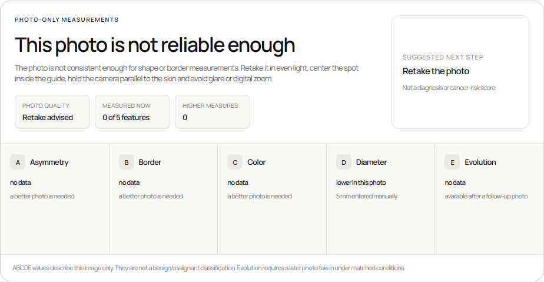

PHOTO-ONLY MEASUREMENTS
Useful before the second photo
DermWatch checks capture quality first. If the image is unreliable, it asks for a retake instead of inventing a confident result.

DermWatch checks capture quality first. If the image is unreliable, it asks for a retake instead of inventing a confident result.
